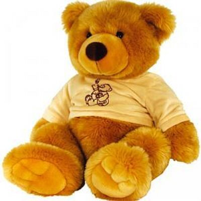

SOBRE O ASTRO
Astrogildo nasceu nas florestas da Sibéria, mas era diferente dos outros ursos: enquanto seus irmãos brigavam por peixe, ele ficava olhando para o céu, sonhando com as estrelas. Desde pequeno, dizia que um dia iria para o espaço. Todos riam, claro — afinal, quem já viu um urso astronauta?
Determinando a provar que era possível, Astrogildo aprendeu sozinho a ler, fazer cálculos e até entender física básica observando os acampamentos humanos. Um dia, encontrou uma base científica russa escondida na floresta. Lá, surpreendeu os cientistas com sua inteligência e, em pouco tempo, foi adotado como parte do projeto URSO — uma iniciativa secreta para treinar animais astronautas.
Com seu traje espacial sob medida e um intelecto brilhante, Astrogildo embarcou numa missão solo rumo a Marte. Durante a viagem, cultivou mel, assistiu filmes espaciais e manteve um diário. Ao chegar, fincou uma bandeira em forma de pata no solo marciano e soltou o primeiro rugido do planeta vermelho.
Hoje, ninguém sabe ao certo onde ele está. Alguns dizem que voltou à Terra e vive discretamente; outros acreditam que está viajando pelo cosmos. Mas uma coisa é certa: Astrogildo provou que até um urso pode alcançar as estrelas — se tiver coragem para sonhar alto.